AI 每日新聞彙整
全部主題
其他
Every Pixel device announced at Made by Google 2026: 11 Pro Fold, Pixel Watch 5, and more
Google's latest Pixel lineup is a little pricier, has a new LED lighting feature, and debuts alongside a new finder tag.
- ZDNet AI Every Amazon Google Pixel 11 preorder deal - get up to $350 on an Amazon gift card, free
- ZDNet AI Every Pixel 11 deal at T-Mobile right now: Trade-in offers, free phones with new line, and more
- ZDNet AI How to preorder every new Google Pixel device - and the best deals I found
- ZDNet AI The Pixel Tag is Google's $29 AirTag alternative - with one big advantage
- TechCrunch AI Everything announced at Made by Google ’26: Pixel 11, Pixel Watch 5, Pixel Tag, and tons of Gemini features
- ZDNet AI The best Pixel 11 and Pixel 11 Pro cases of 2026: Expert recommended
- ZDNet AI AT&T will give you the new Google Pixel 11 Pro for free with trade-in - any year, any condition
- ZDNet AI Pixel Watch 5's strength training feature could replace my top lifting app - no phone needed
- ZDNet AI Google Pixel 11 Pro vs. Apple iPhone 17 Pro: Which Pro model should you buy?
- ZDNet AI Google Pixel 11 vs. Pixel 9: Why the Pixel 11 is actually worth upgrading
- ZDNet AI Google Pixel Watch 5 vs. Apple Watch Series 11: How Google competes against Apple
- The Verge AI Google’s Pixel Watch 5 dives deeper into AI and health
- Wired AI 4 New Camera Tricks on Google’s Latest Pixel 11 Smartphones
- ZDNet AI Every Pixel device announced at Made by Google 2026: 11 Pro Fold, Pixel Watch 5, and more
- ZDNet AI Google Pixel 11 vs Samsung Galaxy Z Fold 8: I compared the latest flagships - here's my take
- ZDNet AI I saw the Google Pixel 11 Pro Fold - and found 3 key reasons to buy it over Samsung
- ZDNet AI Google's new Pixel 11 makes a strong case for skipping the Pro models - here's why
Grok 4.6
https://artificialanalysis.ai/articles/grok-4-6-benchmarks-a... Comments URL: https://news.ycombinator.com/item?id=49274027 Points: 423 # Comments: 414
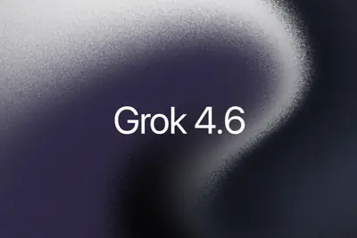
- TechOrange 科技報橘 Grok 4.6 強攻長時間 AI Agent：企業選模型不能再只看 Token 單價
- 科技新報 TechNews Grok 4.6 登場 SpaceX 股價飆近 10%、空軍大撤退
- Hacker News (100+) Grok 4.6
Twitch streamers can now opt out from training Amazon’s AI
Twitch users can now opt out of allowing their content to be used to train Amazon's generative AI models. Opting out means that "your streams, VODs, clips, stream chats, and pictures and text on your channel" won't be used in "future training" of an Amazon AI model "whose purpose
报道称微软限制 Microsoft 365 和 OneDrive，推动 Win10 用户升级 Win11
IT之家 8 月 13 日消息，科技媒体 Windows Latest 昨日（8 月 12 日）发布博文，报道称 微软正尝试通过限制 Microsoft 365 和 OneDrive，推动更多 Windows 10 用户升级迁移到 Windows 11 平台。 根据官方公告，针对适用于 Windows 10 系统的 Microsoft 365 应用，微软将会持续维护到 2028 年 10 月，不过自 version 2608 版本开始，微软将不会再向其推送新功能 / 新特性。 IT之家翻译公告内容如下： 适用于 Windows 10 设备的 Micros
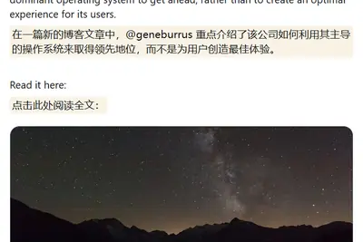
Rogue AI Agents Aren’t Evil. They’re Just Eager to Please
AI agents that break free and hack into other systems are only trying to make us happy.
SpaceXAI推出Grok Bot！主打「幕僚長+專責Bot」AI協作，切入OpenAI與Anthropic戰場
SpaceXAI發表Grok Bot早期測試版，官方稱Bot有自己的雲端電腦，能登入既有帳號把事做完。
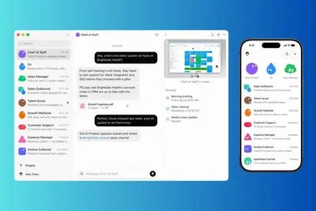
羅昇搶進人形機器人供應鏈 運算控制平台打進歐美市場
佳世達旗下羅昇企業看準人形機器人對高算力、低延遲與高可靠度控制的需求，將工業電腦（IPC）、運動控制及自動化整合能力延伸至智慧機器人，提供整合AI推論、多感測器資料處理、多軸即時控制與工業通訊的運算平台。相關平台已通過海外客戶驗證，並導入國際人形機器人應用，逐...
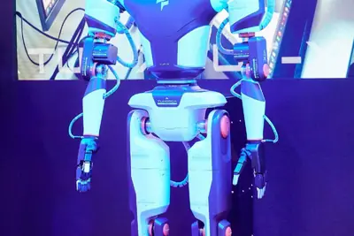
- DIGITIMES 羅昇搶進人形機器人供應鏈 運算控制平台打進歐美市場
SK海力士美國先進封裝廠動工典禮 崔泰源、黃仁勳出席與否成焦點
SK海力士（SK Hynix）將於8月27日在在美國印第安納州（Indiana）西拉法葉舉行先進封裝廠動工典禮。SK集團（SK Group）會長崔泰源與NVIDIA執行長黃仁勳可能同場出席，外界關注崔泰源是否藉機宣布在美加碼投資。
- DIGITIMES SK海力士美國先進封裝廠動工典禮 崔泰源、黃仁勳出席與否成焦點
缺料漲價擋不住 飛捷2Q26毛利率靠備料與支付POS支撐
受惠終端應用市場深化、AI軟體與場域算力升級需求增溫，加上營運槓桿效益持續發揮，帶動整體獲利結構最佳化，工業電腦（IPC）業者飛捷科技2026年第2季單季獲利表現續創新高。若以區域來看，美洲市場貢獻度最高，成為推升本季業績的主要引擎。<br /...
- DIGITIMES 缺料漲價擋不住 飛捷2Q26毛利率靠備料與支付POS支撐
榮耀發表全球首款機器人手機Robot Phone 可動雲台揭新變局
中系手機品牌榮耀（HONOR）8月12日晚間在廣州舉辦全球新品發布會，正式推出號稱全球首款「機器人手機」Robot Phone，將AI Agent與可實際運動的機械雲台整合至智慧型手機，售價人民幣9,999元起。
- DIGITIMES 榮耀發表全球首款機器人手機Robot Phone 可動雲台揭新變局
Unsloth Desktop整合本機AI執行與訓練，本機模型可直接串接Claude Code與Codex
開源AI新創Unsloth推出免費Unsloth Desktop Beta，讓使用者直接在macOS、Windows與Linux電腦執行及訓練AI模型，並能把電腦上的大型語言模型接上Claude Code、OpenAI Codex等AI程式開發工具，讓部分原本需要連上雲端模型處理的工作，改由本機模型執行。
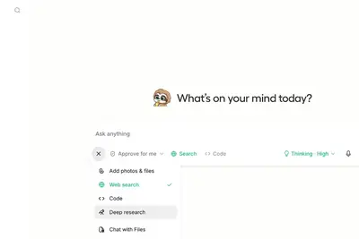
思科AI訂單爆發 營收財測亮眼仍難滿足市場期待
思科（Cisco）最新發布截至7月底的2026會計年度第4季（4QFY26）財報，人工智慧（AI）資料中心需求持續推升網路設備訂單，當季營收與獲利均優於市場預期，FY27營收展望也明顯高於華爾街預估。不過，市場對該公司AI營收預測偏保守深感擔憂。<br /...
- DIGITIMES 思科AI訂單爆發 營收財測亮眼仍難滿足市場期待
矽品精密云林斗六厂动工，预计导入 CoWoS 先进封装
IT之家 8 月 13 日消息，日月光投控旗下集成电路封装测试企业矽品精密 (SPIL) 本月 11 日举行云林斗六厂动土典礼。这座投资近千亿新台币的 AI 半导体先进封测设施 预计将导入 CoWoS 2.5D 异构集成产能 。 IT之家获悉，矽品精密斗六厂开发面积达 6 公顷，满载情况下可创造超 2200 个优质岗位， 首期启用时间预计在 2028 年 。 作为全球半导体产业链的重要成员， 矽品正在岛内多地设厂扩产 。矽品 2022 年在云林虎尾动工的制造设施已于 2025 年 9 月启用，当前处于盈利状态。 相关阅读： 《 黄仁勋访问矽品精密，透露英
麥可貝瑞遭軋空？Nebius 財報報喜、股價飆 34%
輝達（Nvidia）擁有近 10% 股權的荷蘭 AI 基礎建設供應商 Nebius Group 最新公布的第二 […]
- 科技新報 TechNews 麥可貝瑞遭軋空？Nebius 財報報喜、股價飆 34%
阿里千问开放平台上线菜鸟智能体，可协助用户规划寄件方案
IT之家 8 月 13 日消息，据千问 App 消息，千问开放平台近日上线菜鸟智能体。提出寄件需求就能让菜鸟智能体根据物品类型、价格要求、上门时间等，找到合适的寄件方案和快递公司。 保证千问是最新版，就可以用以下方式唤起菜鸟智能体： 对话框里 @菜鸟 点击页面右上角的“圆点图标”进入 在对话中提出你的寄件需求，千问会为你智能调用 IT之家附官方详细介绍如下： 以后寄快递的这些小事，都可以来和千问聊聊： 寄件避坑，随时答疑 寄快递前不确定政策，或者拿不准怎么寄最划算，随时问：“防晒喷雾能寄吗？”“我有一箱很重的书，寄哪个快递更便宜？” 基于丰富知识库与实时
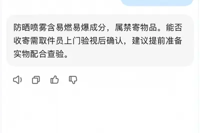
消息称美国 AI 网络安全审查机制未来很可能会覆盖前沿开源模型
IT之家 8 月 13 日消息，外媒《连线》(Wired) 援引消息人士报道称，当前仅针对该国闭源模型的美国前沿人工智能模型网络安全审查机制 “几乎肯定”会在未来数月扩展至开源（开放权重）模型 。 据称 这里的“前沿”定义是与 Anthropic Claude Mythos 或 OpenAI GPT-5.6 能力相当 。报道并未给出详细的对应模型版本。 图源：Pexels 知情人士透露， 这一审查框架目前仍为自愿性质 。部分美国官员意识到强制性的审查可能抑制 AI 发展。 此外，当过审闭源模型推出后美国企业可能降低对未过审的开源模型兴趣，从而抑制美国企业
AI 尚未引發大規模裁員，但史丹佛警告：「AI 衝擊」首波犧牲者已出現
史丹佛大學最新研究顯示，人工智慧尚未引發整體勞動市場大規模裁員，但對剛踏入職場的年輕員工衝擊持續擴大。研究指出 […]
- 科技新報 TechNews AI 尚未引發大規模裁員，但史丹佛警告：「AI 衝擊」首波犧牲者已出現
高通披露骁龙 C 芯片规格：面向 300 美元价位笔记本，单核较英特尔 N250 高 44%
IT之家 8 月 13 日消息，科技媒体 Tom's Hardware 今天（8 月 13 日）发布博文，报道称高通首次披露骁龙 C（Snapdragon C）芯片规格，主要面向约 300 美元 （IT之家注：现汇率约合 2,027 元人民币） 笔记本。 规格方面，骁龙 C 芯片搭载 8 核 Kryo CPU，单核最高频率为 3.0 GHz，多核最高频率为 2.0 GHz。在官方幻灯脚注中，高通表示该芯片可以实现 4 核 2.0 GHz，3 核 2.6 GHz 并行运行，但并未说明 8 个核心同时运行时的频率。 图形方面，骁龙 C 芯片集成高通 Adre
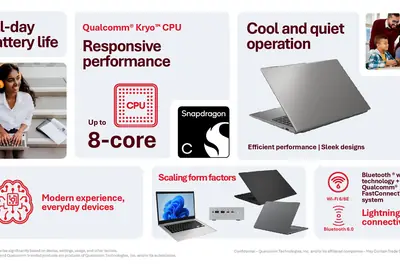
輝達推「AI 路由器」NeMo Switchyard，精準分流助企業狂降 74% 成本
為了有效降低企業高昂的 AI 支出，輝達（Nvidia）本週正式推出 NeMo Switchyard 與 Ne […]
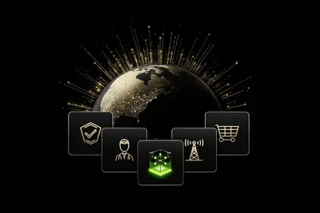
- 科技新報 TechNews 輝達推「AI 路由器」NeMo Switchyard，精準分流助企業狂降 74% 成本
手语人工智能首次进入消费级：谷歌 DeepMind 推出手语转文本模型
IT之家 8 月 13 日消息，谷歌旗下人工智能实验室当地时间 12 日宣布推出一款大规模多语言手语转文本 (SL2T) 翻译模型。 得益于这一模型， 手语人工智能首次进入消费级产品 ：谷歌 Pixel 11 系列智能手机上的 Gboard 和 Live Transcribe 应用程序支持手语转文本输入功能（初期仅限美国手语，后续将扩展至更多种手语和更多设备）。 全球约 7000 万听力障碍人士使用 200 余种手语， 新的功能使他们能享受到类似语音输入的灵活“打字替代”体验 。测试显示，使用美国手语比用英语打字更快、更自然、更令人愉悦。 DeepMin
限时预售价 8.09 万元起，起亚全新赛图斯车型开启预售
IT之家 8 月 13 日消息，起亚全新赛图斯车型今日开启预售，推出 1.5L 舒适版、1.5L 豪华版、1.5L 尊贵版、1.5T 豪华版、1.5T 尊贵版 X-Line、1.5T 尊贵奢享版 X-Line 共 6 个配置版本， 限时预售价 8.09 万元 — 12.09 万元 。 该车预售可享多重礼遇： 6 元起亚 App 下订直抵 2,000 元购车款 车机娱乐套装免费送 5 年免费无限车机流量 3 年 0 首付 0 利息 增换购补贴至高 5,000 元 限时加赠指定外色或 12,000 App 积分 试驾抽奖至高赢 5,000 元购车抵用券 IT
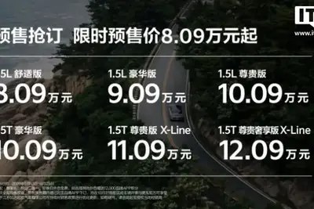
消息称 Anthropic 正洽谈以 60 亿美元收购 AI 初创公司 Decart AI
IT之家 8 月 13 日消息，据彭博社报道，知情人士透露，Anthropic PBC 正在洽谈收购人工智能初创公司 Decart AI，交易金额约为 60 亿美元 （IT之家注：现汇率约合 405.41 亿元人民币） 。 知情人士表示，目前双方尚未最终敲定交易，谈判仍有破裂的可能。由于涉及私人谈判，这些人士要求匿名。 Decart 致力于帮助 AI 开发者充分发挥各种不同芯片的性能，同时也专注于生成式视频领域。该公司使用所谓的“世界模型”（world models），能够对实时视频画面进行即时修改。
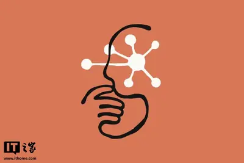
突破產能與良率瓶頸，三星、SK 海力士掀起半導體設備 AI 化革命
三星電子與 SK 海力士正全面加速於半導體製造設備中導入「人工智慧代理」（AI agent），並已進入實機場域 […]
- 科技新報 TechNews 突破產能與良率瓶頸，三星、SK 海力士掀起半導體設備 AI 化革命
微软发布 VS Code 1.133：调整 Agent 窗口，会话支持切换模型提供商
IT之家 8 月 13 日消息，微软昨日（8 月 12 日）发布公告，宣布推出 Visual Studio Code 1.133 更新， 调整 Agent 窗口的访问方式，并支持用户在会话进行期间切换模型提供商。 本次更新主要为开发者添加了实验性设置 chat.agentHost.allowSignedOutWhenUsable ，在用户不愿登录 GitHub 或者设备无法连接 github.com 情况下，也能打开 Agent 窗口。 启用该设置后，GitHub 身份验证不再关联整个 Agents 窗口，只会关联到单个智能体或模型。这项免登录行为目前仅
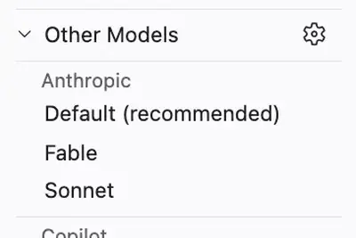
DeepSeek 發布 V4 Pro 正式版，測試效能接近 Fable 5
綜合港媒及中媒報導，中國 AI 新創公司 DeepSeek（深度求索）正式發布旗艦模型 V4 Pro 的正式版 […]
- 科技新報 TechNews DeepSeek 發布 V4 Pro 正式版，測試效能接近 Fable 5
Coherent 財測優 CEO：資料中心日益轉向光通訊
輝達（Nvidia Corp.）矽光子共同封裝光學（CPO）供應夥伴 Coherent Corp. 最新公布的 […]
- 科技新報 TechNews Coherent 財測優 CEO：資料中心日益轉向光通訊
AI 云服务巨头 CoreWeave 证实 A100 芯片可服役至 2029 年，GPU 寿命远超市场预期
IT之家 8 月 13 日消息，AI 云服务公司 CoreWeave 刚刚为 AI 热潮中一个备受争议的问题提供了新证据：AI 芯片究竟能保持多长时间的实用价值，并持续为企业创造收入？ CoreWeave 首席财务官 Nitin Agrawal 当地时间周二晚间向分析师透露，公司最近签署了一份合同，将把英伟达 A100 GPU 出租到 2029 年。英伟达于 2020 年推出了 A100。 这意味着，在这些芯片上市约 9 年之后，客户依然愿意租用它们来运行 AI 工作负载。 这件事之所以重要，是因为投资者一直在激烈争论 AI 硬件的经济价值究竟会以多快的
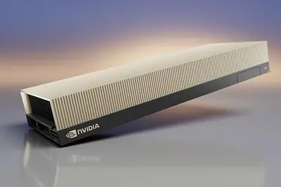
金融時報：疑與中國有關駭客利用自主 AI 工具，入侵台灣政府網站
英國《金融時報》獨家報導，疑似源自中國的駭客利用可公開取得的人工智慧（AI）工具，入侵了台灣政府網站，這起前所 […]
- 科技新報 TechNews 金融時報：疑與中國有關駭客利用自主 AI 工具，入侵台灣政府網站
AI 晶片新秀 Cerebras 財報未達預期 盤後崩近 16%
美國 AI 晶片新創公司 Cerebras 財報表現讓市場失望，積壓訂單未見明顯成長，盤後股價崩跌逾 16%。 […]
- 科技新報 TechNews AI 晶片新秀 Cerebras 財報未達預期 盤後崩近 16%
调查显示超 80% 的日本公司尚未全面拥抱 AI
IT之家 8 月 13 日消息，路透社今日公布的一项调查显示， 超过 80% 的日本公司在其运营中仅有限地使用 AI，或根本不使用 AI 。 约 60% 的受访者表示，AI 仅在其公司的部分部门或以其他有限的方式使用。另有 18% 的受访者表示尚未决定是否在工作场所引入 AI，而 6% 的受访者甚至没有考虑使用 AI。 调查显示，其余 16% 的日本公司已将 AI 作为一项不可或缺的工具。 一位批发商的经理在调查中写道：“我们已经开始在全公司范围内使用它，但它的使用仅限于文档创建等任务。” 一位房地产公司高管称：“我们不知道该如何利用它。” 今年的一份政
请安装更新：华硕 Armoury Crate 工具曝 8.4 分高危漏洞
IT之家 8 月 13 日消息，科技媒体 Windows Central 昨日（8 月 12 日）发布博文， 报道称华硕 Armoury Crate 管理软件爆出高危漏洞，被本地攻击者利用可以提升权限执行恶意代码。 该漏洞追踪编号为 CVE-2026-8917，主要存在于华硕 Armoury Crate 某个组件中，CVSS 评分为 8.4 分（满分 10 分）。Armoury Crate 是华硕用于管理游戏设备和组件的软件，可控制部分 ROG、TUF 硬件功能，也常预装在华硕游戏掌机和游戏笔记本上。 根据 CVE 记录，该问题属于 IOCTL（输入输出
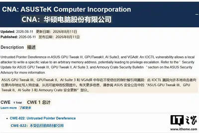
超越鎧俠、美光，長江存儲 NAND 市占首登上全球前三
隨著 AI 工作負載由訓練逐步轉向推論，帶動企業級 SSD 在 2026 年第二季占全球 NAND 快閃記憶體 […]
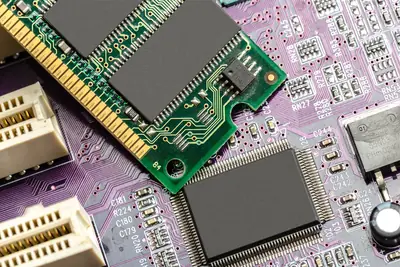
- 科技新報 TechNews 超越鎧俠、美光，長江存儲 NAND 市占首登上全球前三
'Specialists aren't required' anymore: How to stay valuable in an AI agent workplace today
Versatility is in, with people expected to work across the tech stack.
谷歌 AI 重组内幕曝光：布林不满落后 Anthropic，要求全力投入 Gemini 模型
IT之家 8 月 13 日消息，据路透社今日报道，两位知情人士透露，谷歌联合创始人谢尔盖 · 布林近几个月来一直敦促其关键 AI 部门员工 全力投入 Gemini 模型 ，因为其母公司 Alphabet 正在寻求缩小与竞争对手的差距。 据一位不愿透露姓名的人士称，在 Anthropic 公司全力推进其强大的 Claude Mythos 模型预览版之际，布林在 4 月份的一次全体员工大会上向数百名谷歌员工发表讲话， 敦促公司旗下的 Google DeepMind 人工智能实验室加快步伐 。 去年 11 月，谷歌的 Gemini 模型曾短暂超越竞争对手，但
影石 CEO 刘靖康确认在开发两款可换镜头相机，称其中一款造型会颠覆认知
IT之家 8 月 13 日消息，影石 Insta360 日本首家直营旗舰店本月在东京浅草正式开业，影石 CEO 刘靖康接受了当地媒体 MyNavi 的采访。 针对社交网络上关于影石即将进军可换镜头相机领域的传闻，刘靖康明确表示：“ 目前正处于研发推进阶段 。” 此外他还透露，影石正在同时研发两款定位截然不同的机型。其中一款“采用了大家此前未曾设想过的全新形态”，极有可能彻底颠覆传统相机“构图、对焦、按快门”的拍摄模式。 刘靖康随后补充：“我们应该能在明年的 CP+（IT之家注：日本国际摄影器材与影像展览会）上向大家展示原型机。” 谈及研发可换镜头相机的初
Twitch 证实亚马逊正利用其直播内容训练 AI 模型，用户强烈不满
IT之家 8 月 13 日消息，亚马逊正在使用 Twitch 直播内容训练其 AI 模型，而 Twitch 用户对此并不买账。 亚马逊旗下的 Twitch 当地时间周三宣布，用户可以选择退出，从而阻止亚马逊使用自己的内容训练 AI 模型。这一公告也正式确认了一件事：亚马逊确实一直在用 Twitch 内容进行 AI 模型训练。 在一场专门解释此次调整的直播中，Twitch 社区负责人 Mary Kish 表示，她预计用户会对此产生强烈反弹。 “我们并不指望你们对此感到高兴或兴奋，”她说，“我也不认为任何人会对此作出积极反应。” 事实证明，她说对了。 IT之
Mistral AI 自家平台开放第三方模型接入：首个为智谱 GLM-5.2
IT之家 8 月 13 日消息，Mistral AI 当地时间 11 日宣布，作为其一系列欧洲主权人工智能新举措的一部分， 其平台将支持第三方开放模型 ，首款模型将是智谱 GLM-5.2。 Mistral 平台的 第三方开放模型将与其第一方模型运行在相同的基础设施、区域控制、服务承诺下 ，客户可以在不分散其人工智能运行位置的情况下扩展模型选择范围。 Mistral AI 同时宣布， 用户现在可以选择在美国还是欧洲区域执行 AI 推理负载 ，这意味着客户能更方便地满足数据跨境合规监管要求；该企业还启动了 Mistral 优先层级公开预览，这一机制可关键任务
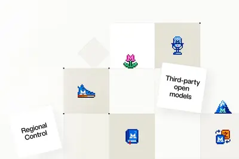
Anthropic 为 Claude 生成 AI 内容添加水印，网友吵翻了
IT之家 8 月 13 日消息，Anthropic 最近决定为 Claude 的输出添加水印，也就是在聊天机器人生成的编辑文本中植入不可见代码，以标记相关内容由人工智能生成。 据IT之家了解，Anthropic 推出这项新政策，是为了满足欧盟《人工智能法案》（EU AI Act）的《透明度规范》要求。该规范如今要求科技公司对人工智能生成或编辑的内容进行标记，而且这种标记必须能够被计算机系统识别。不过，欧洲监管机构可能对此感到满意，一些 AI 用户却明显不太高兴。 在 Reddit 上不难看到用户逐渐积累的不满情绪，不过，网站上的其他用户并不完全认同这些观

Lovable confirms new $13.3B valuation, raises another $400M
This new funding comes after Lovable hit $500 million in annualized run rate revenue in June, the startup told TechCrunch.
Why Stream ring-maker Sandbar says the future of AI wearables is voice
AI notetaking hardware has taken off over the past couple of years, with credit-card-sized devices, pendants, pins, and even transcribing earbuds all promising to capture your meetings and turn them into summaries and action items. Now, a whole wave of wearables — rings especiall
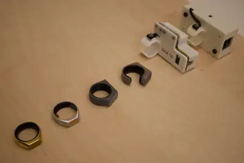